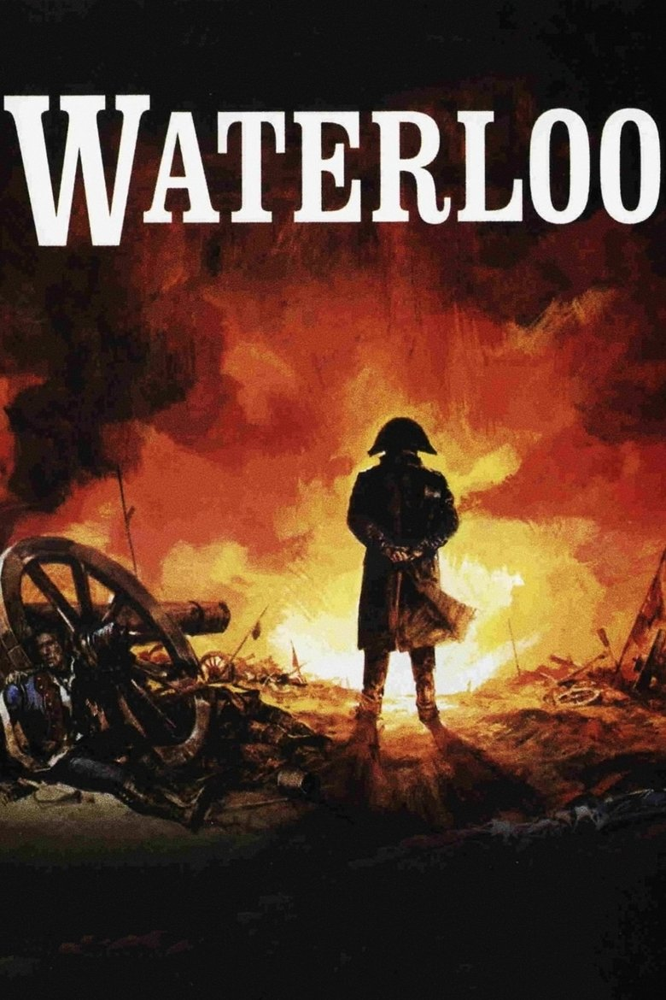

Fiche technique

Synopsis
1814 : dans un Fontainebleau aux allures de tombeau, Napoléon abdique devant ses maréchaux et part pour l'île d'Elbe. Un an plus tard, il en revient — les Cent-Jours s'ouvrent sur la défection du régiment envoyé l'arrêter, ralliement filmé comme une scène d'amour entre un homme et son armée. L'Europe coalisée répond par les armes[1].
Le 18 juin 1815, sous une pluie battante qui retarde tout, deux armées s'observent depuis leurs crêtes près de la ferme de Mont-Saint-Jean. La bataille occupe presque toute la seconde moitié du film : assauts d'Hougoumont, charges de la cavalerie française sur les carrés britanniques, arrivée des Prussiens, garde impériale brisée — jusqu'au champ jonché de morts que Wellington, vainqueur sans joie, traverse seul au crépuscule[1][3].
Contexte de production
Après son Guerre et Paix aux dimensions inédites (Oscar du film étranger 1969), Bondartchouk est l'homme que Dino De Laurentiis vient chercher pour un projet qu'aucun studio occidental ne peut assumer seul : la coproduction italo-soviétique fournit ce que Hollywood n'a plus — une armée. Mosfilm engage plus de 4 millions de livres, près de 17 000 hommes dont une brigade de cavalerie complète, pour 48 jours de tournage en Ukraine[1][2].
Le champ de bataille est littéralement reconstruit : deux collines rasées au bulldozer, une vallée creusée, huit kilomètres de routes, 5 000 arbres transplantés, des champs de seigle semés et un réseau d'irrigation souterrain pour fabriquer la boue historique du 18 juin[1][2]. Côté casting, De Laurentiis rêvait de Burton et d'O'Toole — ce dernier refusa, persuadé que le film serait un four[2] ; ce seront Rod Steiger, Actors Studio au galop, et Christopher Plummer, flegme wellingtonien — le tournage consignant au passage le choc des tempéraments entre la star américaine à vif et le cinéaste soviétique[3]. Budget final : environ 12 millions de livres — l'un des films les plus chers jamais tournés alors[1].
Structure narrative
La construction est en deux temps nettement inégaux : une première heure de marche à la guerre — abdication, Elbe, Cent-Jours, bals bruxellois interrompus par les tambours — puis la bataille elle-même, bloc de près de cinquante minutes qui reste l'une des plus longues reconstitutions militaires continues du cinéma[3]. Le récit alterne strictement les deux quartiers généraux : Napoléon malade, engourdi, guettant Grouchy qui ne viendra pas ; Wellington comptant les heures qui le séparent de Blücher — la bataille comme duel d'attentes plus que de mouvements.
Bondartchouk ponctue cette mécanique de percées subjectives — monologues intérieurs murmurés, visions, le jeune officier qui crie « pourquoi ? » au milieu du carnage — greffant sur la fresque documentaire des éclats de roman tolstoïen. C'est le film entier en tension : la chronique d'état-major et le cri du soldat, sans qu'aucun des deux ne l'emporte[3][4].
Mise en scène et procédés techniques
Tout ce que l'on voit existe : pas de miniatures, pas de surimpressions — 15 000 fantassins et 2 000 cavaliers réels, drillés des mois durant aux manœuvres de 1815, filmés par les caméras Panavision multiples de Nannuzzi et, moment de bravoure, par hélicoptère : les plans aériens sur les carrés britanniques encerclés par les vagues de cavalerie — géométrie humaine vue du ciel — n'ont tout simplement pas d'équivalent dans l'histoire du cinéma[1][3].
La critique française a reconnu la culture picturale de l'ensemble : Bondartchouk « retrouve la grandeur, la fougue, la lumière incandescente des grands peintres du Premier Empire » — Gros, Géricault, David convoqués plan par plan[4] — tandis que les ralentis de la charge de cavalerie installent une « beauté paradoxale face à la destruction »[3]. Nino Rota, entre fanfares et marche funèbre, orchestre l'ambivalence. Revers de la médaille, souvent pointé : à cette altitude, la bataille est « montrée de haut, par un œil neutre » — le spectacle absolu au prix du point de vue[4].
Personnages principaux
Napoléon (Rod Steiger) est joué contre la légende : non le stratège olympien mais un corps malade et une volonté qui s'effrite — sueurs, coliques, absences, colères de vieux lion. Ce parti pris expressionniste a coupé la critique en deux : surjeu « jusqu'à l'absurde » pour les uns[2], incarnation majeure pour les autres — Le Figaro saluant un Steiger qui « traduit parfaitement le Napoléon de la tourmente », celle de la bataille qui lui échappe comme celle du dedans[4].
Wellington (Christopher Plummer) lui répond en exact contrepoint : ironie glacée, épigrammes de salon jusque sous la mitraille — et c'est à lui que le film confie sa phrase-testament au soir de la victoire. Autour d'eux, Ney (Dan O'Herlihy), brave jusqu'à la faute, précipitant la cavalerie sans soutien ; et l'apparition d'Orson Welles en Louis XVIII podagre — trois minutes, une silhouette, tout un régime[1].
Thèmes
Le thème central est la guerre comme machine qui échappe à ses opérateurs. Tout le film oppose la carte au terrain : deux état-majors déplacent des rectangles colorés, et la caméra redescend chaque fois montrer ce que les rectangles contiennent — de la chair, de la boue, de la peur. Les plans d'hélicoptère eux-mêmes servent ce propos : vus du ciel, les hommes redeviennent la carte, et c'est précisément ce vertige d'abstraction que le film dénonce en le produisant[3].
Vient ensuite une méditation très soviétique — tolstoïenne — sur la vanité des grands hommes : Napoléon et Wellington, également impuissants, gagnent ou perdent sur des accidents (une pluie, un ordre mal transmis, Grouchy sourd au canon). L'antimilitarisme final est explicite, confié à Wellington lui-même : « après une bataille perdue, ce qu'il y a de plus triste, c'est une bataille gagnée » — le vainqueur chevauchant seul parmi les cadavres, vision « étrangère au romantisme français » qui annonce Kubrick et Ridley Scott[3].
Réception critique et postérité
Le film est, commercialement, sa propre bataille de Waterloo : les recettes ne couvrent jamais l'investissement, la faute — selon les analyses de l'époque — à un casting sans box-office, au Napoléon clivant de Steiger et à un montage international raccourci qui sacrifiait les personnages au spectacle[1][2]. Sa conséquence la plus fameuse est un film qui n'existe pas :
« Les maigres résultats de Waterloo au box-office conduisirent à l'annulation du projet de biographie de Napoléon de Stanley Kubrick. » Wikipédia, d'après l'historiographie du projet Kubrick[1]
La postérité a inversé le verdict : culte grandissant pour l'ampleur sans équivalent des scènes de bataille — que l'ère numérique a rendues littéralement irremplaçables —, admiration des historiens (Jean Tulard y voit « le meilleur film sur Napoléon »[4]), et réhabilitation progressive du Steiger « de la tourmente ». Le film est devenu ce que sont les monuments : discuté dans le détail, indiscutable dans la masse.
Conclusion
Waterloo est un paradoxe monumental : un film sur la défaite qui fut lui-même une défaite, et dont la valeur n'a cessé de monter depuis — comme ces obligations d'empire qu'on rachète après la chute. Ses défauts sont réels : un récit écartelé entre fresque et psychologie, un point de vue qui se dissout parfois dans sa propre altitude. Mais ce que le film a d'unique est devenu, avec le temps, exactement introuvable : vingt mille hommes réels dans un plan réel, la guerre napoléonienne à l'échelle 1:1, sans pixel.
Reste sa leçon, énoncée par le vainqueur au milieu des morts : il n'y a pas de belle victoire. Que cette leçon ait été produite par la rencontre improbable d'un producteur italien, d'une armée soviétique et d'acteurs anglo-saxons, en pleine guerre froide, ajoute au film une ironie que son sujet aurait goûtée : Waterloo, décidément, est le lieu où les empires viennent apprendre la modestie.
Sources
- Wikipédia (en) — « Waterloo (1970 film) » : production (De Laurentiis/Mosfilm, budget, terrassements, 17 000 figurants, tournage 1969 à Oujhorod), équipe (Nannuzzi, Rota), distribution, échec commercial et annulation du Napoléon de Kubrick, statut culte. en.wikipedia.org
- The Magnificent 60s — « Behind the Scenes: Waterloo (1970) » (recension du livre de production, consultée via recherche web) : casting initial Burton/O'Toole, refus d'O'Toole, chiffres de tournage, analyse de l'échec. themagnificent60s.com
- Perestroikino — « Waterloo (1970) » : contexte post-Guerre et Paix, plans d'hélicoptère sur les carrés, ralentis de la charge, tensions Steiger/Plummer/Bondartchouk, antimilitarisme final et filiation Kubrick/Scott. perestroikino.fr
- Critiques françaises consultées via recherche web (L'Œil sur l'écran, citations du Figaro et de Jean Tulard) : iconographie du Premier Empire, jugement sur Steiger, limite du « point de vue neutre », éloge de Tulard. films.oeil-ecran.com
- The Movie Database (TMDB) — fiche du film (données factuelles, affiche). themoviedb.org/movie/33157